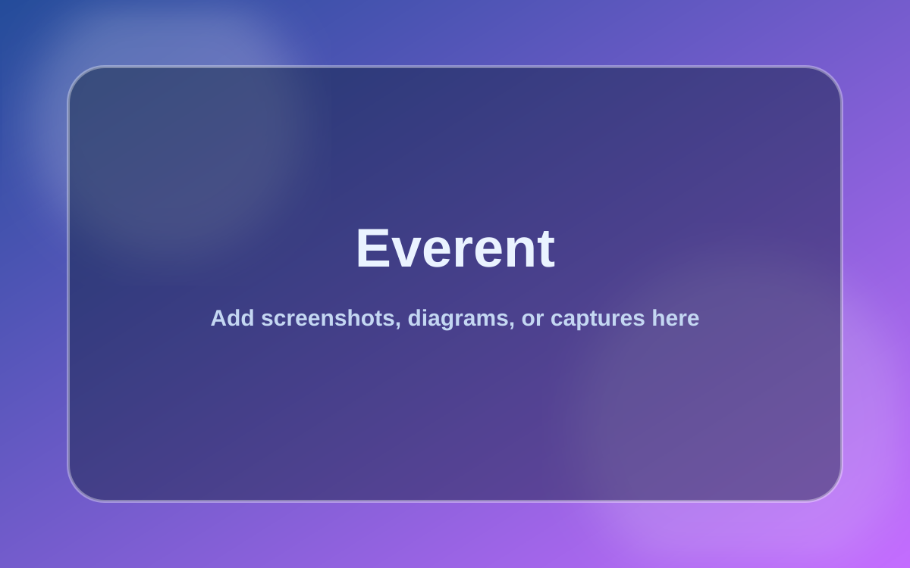
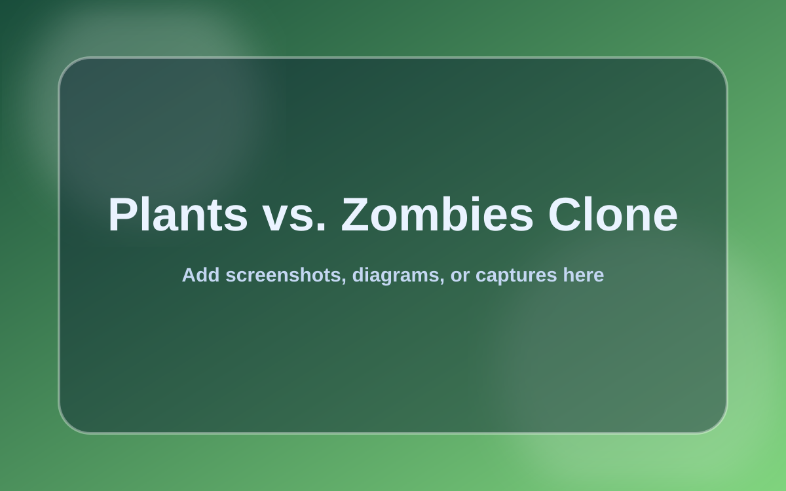
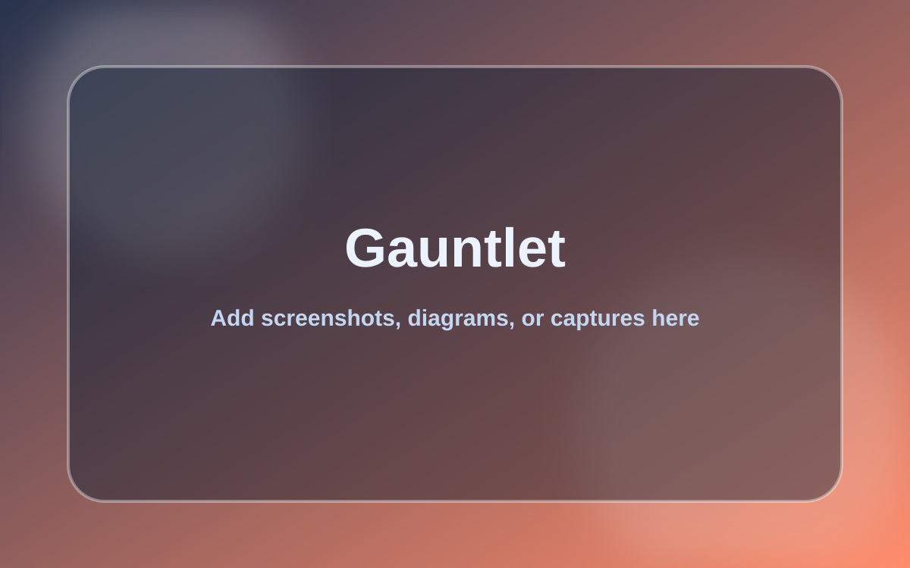
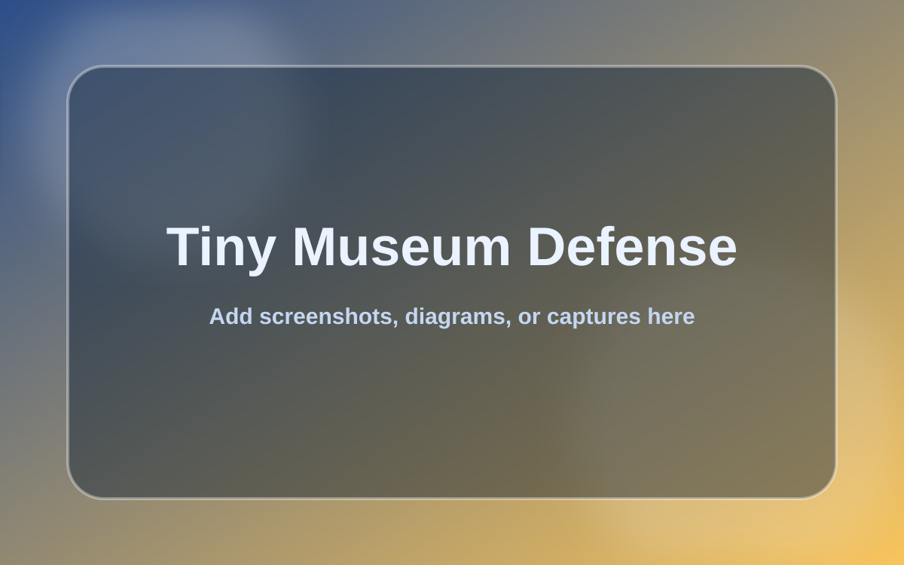
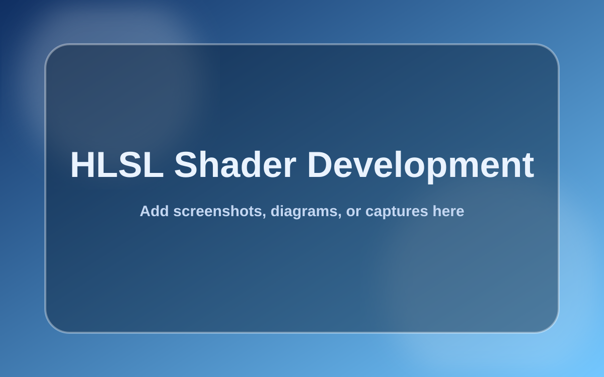

Portfolio Work
Projects
A mix of gameplay programming, UI, rendering experiments, technical art, lighting, and digital sculpting.
Systems + Gameplay
Programming Projects

Everent
Role: Programmer
Tools: Unreal Engine, C++, Blueprints
Duration: Oct. 2025 - July 2026
A sky-surfing game focused on stylish traversal, surface riding, wind tunnels, rail grinding, and progression systems.
View Project Details
Revenant: Through the Veil - Programming
Role: Lead Programmer
Tools: Unreal Engine 5.3.2, Blueprints
Duration: Oct. 2024 - June 2025
Gameplay systems, player ability switching, enemy AI, and programming leadership for an Egyptian souls-like game.
View Project Details
Plants vs. Zombies Clone
Role: UI Lead
Tools: Custom Engine, C++, JSON
Duration: 3 weeks
A C++ clone focused on UI integration, plant-selection interaction, shovel behavior, and grid-based gameplay systems.
View Project Details
Gauntlet
Role: Solo Developer
Tools: C, OpenGL Wrapper
Duration: 3 weeks
A C project with custom UI, data-driven level parsing, inventory tracking, and safe enemy spawner logic.
View Project Details
Tiny Museum Defense
Role: Gameplay and UI Programmer
Tools: Unity 6, C#
Duration: 2 weeks
A mobile tower defense project focused on clean tower UI, upgrade flow, and touch gesture interactions.
View Project Details
HLSL Shader Development
Role: Shader Programmer
Tools: HLSL, NVIDIA FX Composer 2.5
Duration: 3 months
Real-time rendering studies covering normal mapping, environment mapping, shadowing, texture sampling, and post-processing.
View Project Details
Vulkan Triangle
Role: Programmer
Tools: GLFW, C++
Duration: 2 weeks
My first triangle rendered in Vulkan, focused on graphics pipeline fundamentals.
View Project Details
snek_game
Role: Gameplay Programmer
Tools: SDL2, C++
Duration: 4 weeks
Classic snake gameplay with food collection, wall avoidance, and growth mechanics.
View Project Details
Text Adventure Game
Role: Gameplay Programmer
Tools: SDL2, C++
Duration: 3 days
A console adventure through the Dark Forest, grassland plains, and desert dunes.
View Project Details
The Disappearance of Mr. Findie
Role: Gameplay Programmer
Tools: Unreal Engine 5.3.2, Blueprints
Duration: 4 weeks
A mystery game about uncovering what happened to Mr. Findie.
View Project Details
Monkey Chef
Role: Gameplay Programmer
Tools: Unity 2022.3.37f1, C#
Duration: 4 weeks
Defeat aliens and collect ingredients to save the family potluck, TV time, and Sundae Date Night.
View Project DetailsVisual Work
Art Projects
Revenant: Through the Veil - Lighting
Role: Lighting Artist
Tools: Unreal Engine 5.3.2
Duration: Oct. 2024 - June 2025
Lighting work for Revenant, supporting the mood, readability, and atmosphere of the game world.
View Project Details
AC-122 Gunship Project (Halo Vulture)
Role: Digital Sculptor
Tools: ZBrush
Duration: 4 weeks
A digital sculpt of the Halo Vulture, focused on form, silhouette, and hard-surface detail.
View Project Details